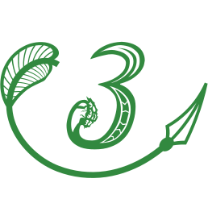

Or, un soir que d'Artagnan, qui était de tranchée, n'avait pu les accompagner, Athos, Porthos et Aramis, montés sur leurs chevaux de bataille, enveloppés de manteaux de guerre, une main sur la crosse de leurs pistolets, revenaient tous trois d'une buvette qu'Athos avait découverte deux jours auparavant sur la route de La Jarrie, et qu'on appelait le Colombier-Rouge, suivant le chemin qui conduisait au camp, tout en se tenant sur leurs gardes, comme nous l'avons dit, de peur d'embuscade, lorsqu'à un quart de lieue à peu près du village de Boisnar ils crurent entendre le pas d'une cavalcade qui venait à eux; aussitôt tous trois s'arrêtèrent, serrés l'un contre l'autre, et attendirent, tenant le milieu de la route: au bout d'un instant, et comme la lune sortait justement d'un nuage, ils virent apparaître au détour d'un chemin deux cavaliers qui, en les apercevant, s'arrêtèrent à leur tour, paraissant délibérer s'ils devaient continuer leur route ou retourner en arrière. Cette hésitation donna quelques soupçons aux trois amis, et Athos, faisant quelques pas en avant, cria de sa voix ferme:
«Qui vive?
— Qui vive vous-même? répondit un de ces deux cavaliers.
— Ce n'est pas répondre, cela! dit Athos. Qui vive? Répondez, ou nous chargeons.
— Prenez garde à ce que vous allez faire, messieurs! dit alors une voix vibrante qui paraissait avoir l'habitude du commandement.
— C'est quelque officier supérieur qui fait sa ronde de nuit, dit
Athos, que voulez-vous faire, messieurs?
— Qui êtes-vous? dit la même voix du même ton de commandement; répondez à votre tour, ou vous pourriez vous mal trouver de votre désobéissance.
— Mousquetaires du roi, dit Athos, de plus en plus convaincu que celui qui les interrogeait en avait le droit.
— Quelle compagnie?
— Compagnie de Tréville.
— Avancez à l'ordre, et venez me rendre compte de ce que vous faites ici, à cette heure.»
Les trois compagnons s'avancèrent, l'oreille un peu basse, car tous trois maintenant étaient convaincus qu'ils avaient affaire à plus fort qu'eux; on laissa, au reste, à Athos le soin de porter la parole.
Un des deux cavaliers, celui qui avait pris la parole en second lieu, était à dix pas en avant de son compagnon; Athos fit signe à Porthos et à Aramis de rester de leur côté en arrière, et s'avança seul.
«Pardon, mon officier! dit Athos; mais nous ignorions à qui nous avions affaire, et vous pouvez voir que nous faisions bonne garde.
— Votre nom? dit l'officier, qui se couvrait une partie du visage avec son manteau.
— Mais vous-même, monsieur, dit Athos qui commençait à se révolter contre cette inquisition; donnez-moi, je vous prie, la preuve que vous avez le droit de m'interroger.
— Votre nom? reprit une seconde fois le cavalier en laissant tomber son manteau de manière à avoir le visage découvert.
— Monsieur le cardinal! s'écria le mousquetaire stupéfait.
— Votre nom? reprit pour la troisième fois Son Éminence.
— Athos», dit le mousquetaire.
Le cardinal fit un signe à l'écuyer, qui se rapprocha.
«Ces trois mousquetaires nous suivront, dit-il à voix basse, je ne veux pas qu'on sache que je suis sorti du camp, et, en nous suivant, nous serons sûrs qu'ils ne le diront à personne.
— Nous sommes gentilshommes, Monseigneur, dit Athos; demandez- nous donc notre parole et ne vous inquiétez de rien. Dieu merci, nous savons garder un secret.»
Le cardinal fixa ses yeux perçants sur ce hardi interlocuteur.
«Vous avez l'oreille fine, monsieur Athos, dit le cardinal; mais maintenant, écoutez ceci: ce n'est point par défiance que je vous prie de me suivre, c'est pour ma sûreté: sans doute vos deux compagnons sont MM. Porthos et Aramis?
— Oui, Votre Éminence, dit Athos, tandis que les deux mousquetaires restés en arrière s'approchaient, le chapeau à la main.
— Je vous connais, messieurs, dit le cardinal, je vous connais: je sais que vous n'êtes pas tout à fait de mes amis, et j'en suis fâché, mais je sais que vous êtes de braves et loyaux gentilshommes, et qu'on peut se fier à vous. Monsieur Athos, faites-moi donc l'honneur de m'accompagner, vous et vos deux amis, et alors j'aurai une escorte à faire envie à Sa Majesté, si nous la rencontrons.»
Les trois mousquetaires s'inclinèrent jusque sur le cou de leurs chevaux.
«Eh bien, sur mon honneur, dit Athos, Votre Éminence a raison de nous emmener avec elle: nous avons rencontré sur la route des visages affreux, et nous avons même eu avec quatre de ces visages une querelle au Colombier-Rouge.
— Une querelle, et pourquoi, messieurs? dit le cardinal, je n'aime pas les querelleurs, vous le savez!
— C'est justement pour cela que j'ai l'honneur de prévenir Votre Éminence de ce qui vient d'arriver; car elle pourrait l'apprendre par d'autres que par nous, et, sur un faux rapport, croire que nous sommes en faute.
— Et quels ont été les résultats de cette querelle? demanda le cardinal en fronçant le sourcil.
— Mais mon ami Aramis, que voici, a reçu un petit coup d'épée dans le bras, ce qui ne l'empêchera pas, comme Votre Éminence peut le voir, de monter à l'assaut demain, si Votre Éminence ordonne l'escalade.
— Mais vous n'êtes pas hommes à vous laisser donner des coups d'épée ainsi, dit le cardinal: voyons, soyez francs, messieurs, vous en avez bien rendu quelques-uns; confessez-vous, vous savez que j'ai le droit de donner l'absolution.
— Moi, Monseigneur, dit Athos, je n'ai pas même mis l'épée à la main, mais j'ai pris celui à qui j'avais affaire à bras-le-corps et je l'ai jeté par la fenêtre; il paraît qu'en tombant, continua Athos avec quelque hésitation, il s'est cassé la cuisse.
— Ah! ah! fit le cardinal; et vous, monsieur Porthos?
— Moi, Monseigneur, sachant que le duel est défendu, j'ai saisi un banc, et j'en ai donné à l'un de ces brigands un coup qui, je crois, lui a brisé l'épaule.
— Bien, dit le cardinal; et vous, monsieur Aramis?
— Moi, Monseigneur, comme je suis d'un naturel très doux et que, d'ailleurs, ce que Monseigneur ne sait peut-être pas, je suis sur le point de rentrer dans les ordres, je voulais séparer mes camarades, quand un de ces misérables m'a donné traîtreusement un coup d'épée à travers le bras gauche: alors la patience m'a manqué, j'ai tiré mon épée à mon tour, et comme il revenait à la charge, je crois avoir senti qu'en se jetant sur moi il se l'était passée au travers du corps: je sais bien qu'il est tombé seulement, et il m'a semblé qu'on l'emportait avec ses deux compagnons.
— Diable, messieurs! dit le cardinal, trois hommes hors de combat pour une dispute de cabaret, vous n'y allez pas de main morte; et à propos de quoi était venue la querelle?
— Ces misérables étaient ivres, dit Athos, et sachant qu'il y avait une femme qui était arrivée le soir dans le cabaret, ils voulaient forcer la porte.
— Forcer la porte! dit le cardinal, et pour quoi faire?
— Pour lui faire violence sans doute, dit Athos; j'ai eu l'honneur de dire à Votre Éminence que ces misérables étaient ivres.
— Et cette femme était jeune et jolie? demanda le cardinal avec une certaine inquiétude.
— Nous ne l'avons pas vue, Monseigneur, dit Athos.
— Vous ne l'avez pas vue; ah! très bien, reprit vivement le cardinal; vous avez bien fait de défendre l'honneur d'une femme, et, comme c'est à l'auberge du Colombier-Rouge que je vais moi- même, je saurai si vous m'avez dit la vérité.
— Monseigneur, dit fièrement Athos, nous sommes gentilshommes, et pour sauver notre tête, nous ne ferions pas un mensonge.
— Aussi je ne doute pas de ce que vous me dites, monsieur Athos, je n'en doute pas un seul instant; mais, ajouta-t-il pour changer la conversation, cette dame était donc seule?
— Cette dame avait un cavalier enfermé avec elle, dit Athos; mais, comme malgré le bruit ce cavalier ne s'est pas montré, il est à présumer que c'est un lâche.
— Ne jugez pas témérairement, dit l'évangile», répliqua le cardinal.
Athos s'inclina.